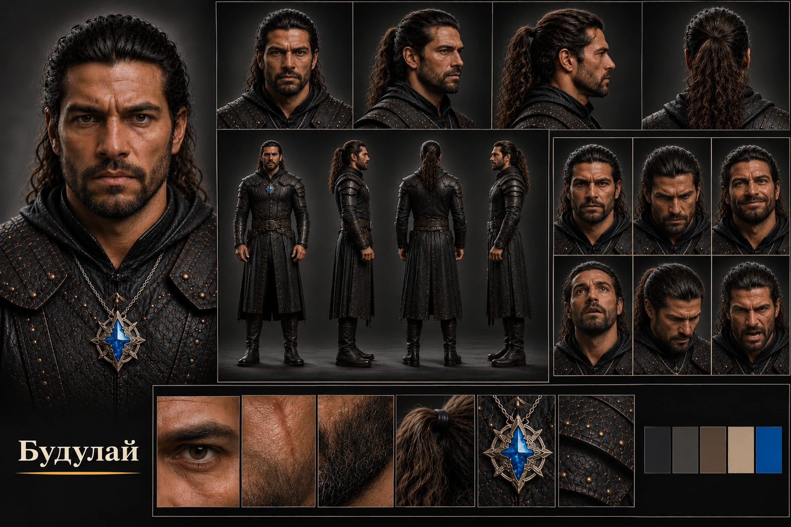

ОСНОВНА ІНФОРМАЦІЯ
Організатор науки та виробництва
Будулай — один із хорунжих отаманів Сухума. Його робота охоплює десятки паралельних завдань: навколо нього постійно працюють інженери, науковці, керівники лабораторій і виробничих комплексів. Він веде розрахунки та довгострокові програми розвитку, оцінює потреби різних планів і визначає, які потужності потрібно розширити.
Статус: хорунжий отаман Сухума
Основна діяльність: наукові, інженерні та виробничі програми
Здібності: відкриття й підтримання міжпланових порталів
Вік: у перевірених фрагментах не зазначений
Зовнішність: довге темне волосся, зібране ззаду, борода; темний одяг із синім кулоном — за авторським зображенням
РОБОТА З СУХУМОМ
Відповідальність за розвиток інфраструктури
Після домовленостей із Другим планом Сухум передає Будулаю нові завдання. Будулай оцінює потреби переселеної цивілізації та пояснює, що доведеться забезпечити житловими комплексами, медичними центрами, очищенням води, транспортом і енергетикою. Паралельно потрібно постачати армії бронекостюми, зброю, боєприпаси, техніку й навчальне обладнання.
Він пропонує збільшити виробничі потужності, розгорнути автоматизовані заводи та нові енергетичні вузли. Окремо порушує питання космічної безпеки: розвитку нових двигунів, орбітальних бойових платформ і резервів для майбутніх космічних програм.
ДЕНЬ 17 · ЕВАКУАЦІЯ
Портали під час бою
Під час атаки на поселення Будулай організовує виведення цивільних до прихованого поселення на іншій півкулі планети. Він відкриває портали один за одним, пропускає групи людей і відразу розгортає наступні переходи. На іншому боці евакуйованих зустрічають бійці та відводять подалі від порталу.
Коли противник наближається, Будулай не припиняє роботу навіть під обстрілом. Він допомагає виводити дітей, літніх людей і поранених, координуючи дії з бійцями, які прикривають майданчик. Після кожної групи він закриває перехід і відкриває новий, доки на майданчику залишаються люди.
ХАРАКТЕР І ВЗАЄМИНИ
Зосередженість і практичний погляд
У розмовах Будулай уважно вивчає передані матеріали й насамперед шукає практичні наслідки домовленостей: що потрібно побудувати, виготовити або забезпечити. Він мислить масштабами систем і заздалегідь оцінює обмеження ресурсів. Його гумор сухий і стриманий, але він не уникає складних завдань.
Сухум є його гетьманом і безпосереднім керівником. Найрін та Іман — інші хорунжі отамани, з якими Будулай розподіляє спільні завдання. Під час евакуації він працює разом із бійцями, які забезпечують периметр і приймають людей після переходу.
У доступних фрагментах не зазначено його вік, родину чи окрему передісторію. Ці відомості не додаються без підтвердження рукописами.